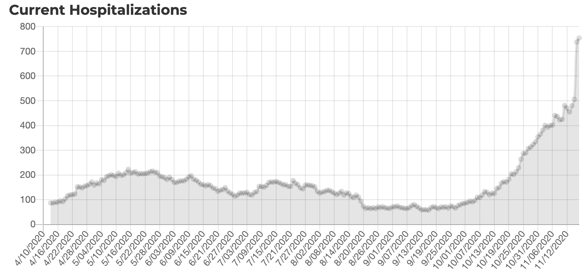
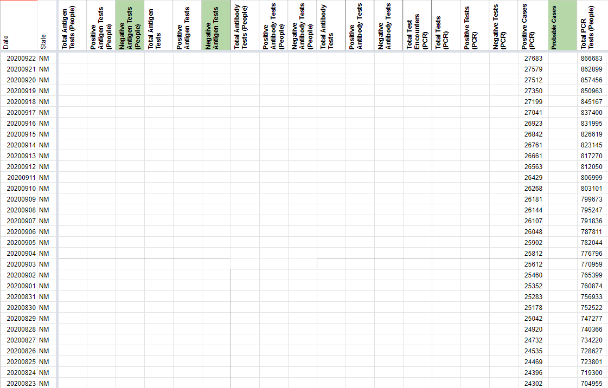
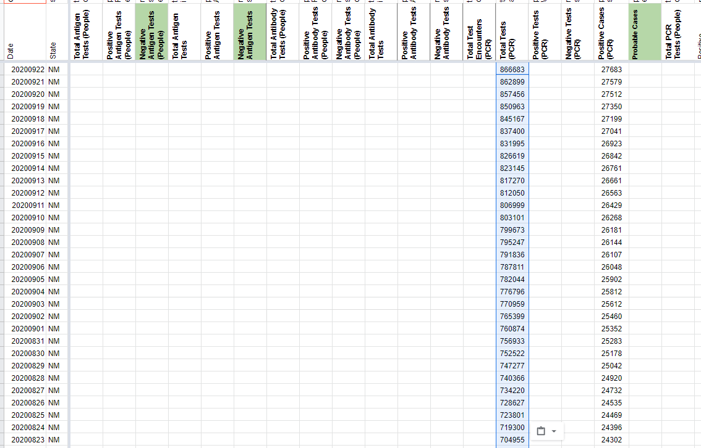
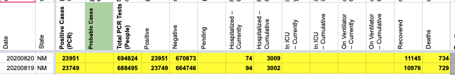
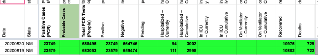
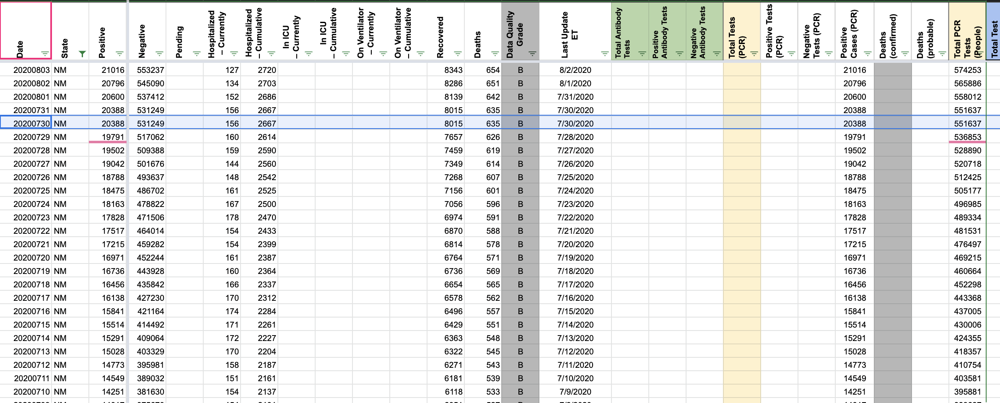
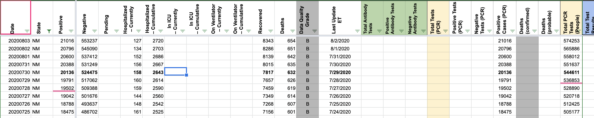

#1134: [NM] Remove calculated negative tests after 4/6/2020
Issue number 1134
muamichali opened this issue on March 5, 2021, 5:56 PM PST
Labels Data quality
State or US: New Mexico
Describe the problem We were previously calcaulating Negative (People or Cases) in New Mexico because our system relied on adding positive+negative to get total tests. Since this is no longer the case, we are removing the calculated negatives timeseries.
The last time NM reported negatives explicitly was for April 4th, 2020: https://covid-tracking-project-data.s3.us-east-1.amazonaws.com/state_screenshots/NM/NM-20200405-001135.png https://covid-tracking-project-data.s3.us-east-1.amazonaws.com/state_screenshots/NM/NM-20200406-121242.png
Comments
#1134: [NM] Remove calculated negative tests after 4/6/2020
Issue number 1134
muamichali opened this issue on March 5, 2021, 5:56 PM PST
Labels Data quality
State or US: New Mexico
Describe the problem We were previously calcaulating Negative (People or Cases) in New Mexico because our system relied on adding positive+negative to get total tests. Since this is no longer the case, we are removing the calculated negatives timeseries.
The last time NM reported negatives explicitly was for April 4th, 2020: https://covid-tracking-project-data.s3.us-east-1.amazonaws.com/state_screenshots/NM/NM-20200405-001135.png https://covid-tracking-project-data.s3.us-east-1.amazonaws.com/state_screenshots/NM/NM-20200406-121242.png
Comments
#1118: [NM] Backfill Total Test PCR timeseries from state data & screenshots
Issue number 1118
muamichali opened this issue on March 1, 2021, 4:13 PM PST
Labels Data quality
State or US: New Mexico
Describe the problem CTP started capturing total tests data in NM on 5/12. The state provides a data download file that adds tests from 4/10 - 5/11 so we are going to backfill them.
Link to data source https://e7p503ngy5.execute-api.us-west-2.amazonaws.com/prod/GetCvDataByDay Changes (2).txt
Comments
| Date | Data as of | Screenshot URL | Screenshot Total Tests | Screenshot Positive | Screenshot Negatives |
|---|---|---|---|---|---|
| 4/14/2020 | 4/13/20 | https://covid-tracking-project-data.s3.us-east-1.amazonaws.com/state_screenshots/NM/NM-20200413-181306.png | 31970 | 1345 | 30625 |
| 4/13/2020 | 4/12/20 | https://covid-tracking-project-data.s3.us-east-1.amazonaws.com/state_screenshots/NM/NM-20200412-181400.png | 30515 | 1245 | 29270 |
| 4/12/2020 | 4/11/20 | https://covid-tracking-project-data.s3.us-east-1.amazonaws.com/state_screenshots/NM/NM-20200411-181253.png | 28692 | 1174 | 27518 |
| 4/10/2020 | 4/10/20 | https://covid-tracking-project-data.s3.us-east-1.amazonaws.com/state_screenshots/NM/NM-20200410-181526.png | 27098 | 1091 | 26007 |
| 4/9/2020 | 4/9/20 | https://covid-tracking-project-data.s3.us-east-1.amazonaws.com/state_screenshots/NM/NM-20200410-001223.png | 23931 | 989 | 22942 |
| 4/8/2020 | 4/8/20 | https://covid-tracking-project-data.s3.us-east-1.amazonaws.com/state_screenshots/NM/NM-20200409-094712.png | 23807 | 865 | 22942 |
| 4/7/2020 | 4/7/20 | https://covid-tracking-project-data.s3.us-east-1.amazonaws.com/state_screenshots/NM/NM-20200407-181304.png | 21933 | 794 | 21139 |
| 4/6/2020 | 4/6/20 | https://covid-tracking-project-data.s3.us-east-1.amazonaws.com/state_screenshots/NM/NM-20200407-001234.png | 21825 | 686 | 21139 |
| 4/5/2020 | 4/5/20 | https://covid-tracking-project-data.s3.us-east-1.amazonaws.com/state_screenshots/NM/NM-20200406-121242.png | 19136 | 624 | 18512 |
| 4/4/2020 | 4/4/20 | https://covid-tracking-project-data.s3.us-east-1.amazonaws.com/state_screenshots/NM/NM-20200405-001135.png | 16828 | 543 | 16285 |
| 4/3/2020 | 4/3/20 | https://covid-tracking-project-data.s3.us-east-1.amazonaws.com/state_screenshots/NM/NM-20200403-181143.png | 15632 | 495 | 15137 |
| 4/2/2020 | 4/2/20 | https://covid-tracking-project-data.s3.us-east-1.amazonaws.com/state_screenshots/NM/NM-20200402-181337.png | 14778 | 403 | 14375 |
| 4/1/2020 | 4/1/20 | https://covid-tracking-project-data.s3.us-east-1.amazonaws.com/state_screenshots/NM/NM-20200401-181037.png | 14011 | 363 | 13648 |
| 3/31/2020 | 3/31/20 | https://covid-tracking-project-data.s3.us-east-1.amazonaws.com/state_screenshots/NM/NM-20200401-001511.png | 13240 | 315 | 12925 |
| 3/30/2020 | 3/30/20 | https://covid-tracking-project-data.s3.us-east-1.amazonaws.com/state_screenshots/NM/NM-20200331-181130.png | 12527 | 281 | 12246 |
| 3/29/2020 | 3/29/20 | https://covid-tracking-project-data.s3.us-east-1.amazonaws.com/state_screenshots/NM/NM-20200329-191045.png | 11006 | 237 | 10769 |
| 3/28/2020 | 3/28/20 | https://covid-tracking-project-data.s3.us-east-1.amazonaws.com/state_screenshots/NM/NM-20200328-191304.png | 10977 | 208 | 10769 |
| 3/27/2020 | 3/27/20 | https://covid-tracking-project-data.s3.us-east-1.amazonaws.com/state_screenshots/NM/NM-20200327-191115.png | 9387 | 191 | 9196 |
| 3/26/2020 | 3/26/20 | https://covid-tracking-project-data.s3.us-east-1.amazonaws.com/state_screenshots/NM/NM-20200327-161104.png | 8513 | 136 | 8377 |
| 3/25/2020 | 3/25/20 | https://covid-tracking-project-data.s3.us-east-1.amazonaws.com/state_screenshots/NM/NM-20200325-190844.png | 7793 | 112 | 7681 |
| 3/24/2020 | 3/24/20 | https://covid-tracking-project-data.s3.us-east-1.amazonaws.com/state_screenshots/NM/NM-20200324-190734.png | 6842 | 100 | 6742 |
| 3/23/2020 | 3/23/20 | https://covid-tracking-project-data.s3.us-east-1.amazonaws.com/state_screenshots/NM/NM-20200323-190951.png | 5973 | 83 | 5890 |
| 3/22/2020 | 3/22/20 | https://covid-tracking-project-data.s3.us-east-1.amazonaws.com/state_screenshots/NM/NM-20200322-190834.png | 5386 | 65 | 5321 |
| 3/21/2020 | 3/21/20 | https://covid-tracking-project-data.s3.us-east-1.amazonaws.com/state_screenshots/NM/NM-20200321-190705.png | 4779 | 57 | 4722 |
| 3/20/2020 | 3/20/20 | https://covid-tracking-project-data.s3.us-east-1.amazonaws.com/state_screenshots/NM/NM-20200320-191625.png | 3814 | 43 | 3771 |
| 3/19/2020 | 3/19/20 | https://covid-tracking-project-data.s3.us-east-1.amazonaws.com/state_screenshots/NM/NM-20200319-190559.png | 2797 | 35 | 2762 |
| 3/18/2020 | 3/18/20 | https://covid-tracking-project-data.s3.us-east-1.amazonaws.com/state_screenshots/NM/NM-20200318-190602.png | 2354 | 28 | 2326 |
| 3/17/2020 | 3/17/20 | https://covid-tracking-project-data.s3.us-east-1.amazonaws.com/state_screenshots/NM/NM-20200317-180524.png | 1720 | 23 | 1697 |
| 3/16/2020 | 3/16/20 | https://covidtracking.com/screenshots/NM/NM-20200316-231047.png | 1270 | 21 | 1249 |
| 3/15/2020 | 3/15/20 | https://covid-tracking-project-data.s3.us-east-1.amazonaws.com/state_screenshots/NM/NM-20200316-105958.png | 583 | 17 | 566 |
| 3/14/2020 | 3/14/20 | https://covid-tracking-project-data.s3.us-east-1.amazonaws.com/state_screenshots/NM/NM-20200315-163858.png | 495 | 13 | 482 |
| 3/13/2020 | 3/13/20 | https://web.archive.org/web/20200314111954/https://cv.nmhealth.org/ | 247 | 10 | 237 |
| 3/12/2020 | 3/12/2020 | https://web.archive.org/web/20200313104328/http://cv.nmhealth.org/ | 173 | 6 | 167 |
| 3/11/2020 | 3/11/20 | https://web.archive.org/web/20200312024231/http://cv.nmhealth.org/ | 129 | 4 | 125 |
| 3/10/2020 | 3/10/2020 | https://web.archive.org/web/20200311020914/https://cv.nmhealth.org/ | 87 | 0 | 87 |
| 3/9/2020 | 57 | 0 | 57 | ||
| 3/8/2020 | 3/8/2020 | https://web.archive.org/web/20200309171611/https://cv.nmhealth.org/ | 57 | 0 | 57 |
| 3/7/2020 | 3/6/2020 | https://web.archive.org/web/20200308165056/https://cv.nmhealth.org/ | 46 | 0 | 46 |
| 3/6/2020 | 10 | 0 | 10 | ||
| 3/5/2020 | 3/4/2020 | https://web.archive.org/web/20200306155750/https://cv.nmhealth.org/ | 10 | 0 | 10 |
We are also going to backfill Total Tests (PCR), Positive and Negative from 3/5 to 4/10 using data from screenshots on web.archive.org and screenshots.covidtracking.com
#1118: [NM] Backfill Total Test PCR timeseries from state data & screenshots
Issue number 1118
muamichali opened this issue on March 1, 2021, 4:13 PM PST
Labels Data quality
State or US: New Mexico
Describe the problem CTP started capturing total tests data in NM on 5/12. The state provides a data download file that adds tests from 4/10 - 5/11 so we are going to backfill them.
Link to data source https://e7p503ngy5.execute-api.us-west-2.amazonaws.com/prod/GetCvDataByDay Changes (2).txt
Comments
| Date | Data as of | Screenshot URL | Screenshot Total Tests | Screenshot Positive | Screenshot Negatives |
|---|---|---|---|---|---|
| 4/14/2020 | 4/13/20 | https://covid-tracking-project-data.s3.us-east-1.amazonaws.com/state_screenshots/NM/NM-20200413-181306.png | 31970 | 1345 | 30625 |
| 4/13/2020 | 4/12/20 | https://covid-tracking-project-data.s3.us-east-1.amazonaws.com/state_screenshots/NM/NM-20200412-181400.png | 30515 | 1245 | 29270 |
| 4/12/2020 | 4/11/20 | https://covid-tracking-project-data.s3.us-east-1.amazonaws.com/state_screenshots/NM/NM-20200411-181253.png | 28692 | 1174 | 27518 |
| 4/10/2020 | 4/10/20 | https://covid-tracking-project-data.s3.us-east-1.amazonaws.com/state_screenshots/NM/NM-20200410-181526.png | 27098 | 1091 | 26007 |
| 4/9/2020 | 4/9/20 | https://covid-tracking-project-data.s3.us-east-1.amazonaws.com/state_screenshots/NM/NM-20200410-001223.png | 23931 | 989 | 22942 |
| 4/8/2020 | 4/8/20 | https://covid-tracking-project-data.s3.us-east-1.amazonaws.com/state_screenshots/NM/NM-20200409-094712.png | 23807 | 865 | 22942 |
| 4/7/2020 | 4/7/20 | https://covid-tracking-project-data.s3.us-east-1.amazonaws.com/state_screenshots/NM/NM-20200407-181304.png | 21933 | 794 | 21139 |
| 4/6/2020 | 4/6/20 | https://covid-tracking-project-data.s3.us-east-1.amazonaws.com/state_screenshots/NM/NM-20200407-001234.png | 21825 | 686 | 21139 |
| 4/5/2020 | 4/5/20 | https://covid-tracking-project-data.s3.us-east-1.amazonaws.com/state_screenshots/NM/NM-20200406-121242.png | 19136 | 624 | 18512 |
| 4/4/2020 | 4/4/20 | https://covid-tracking-project-data.s3.us-east-1.amazonaws.com/state_screenshots/NM/NM-20200405-001135.png | 16828 | 543 | 16285 |
| 4/3/2020 | 4/3/20 | https://covid-tracking-project-data.s3.us-east-1.amazonaws.com/state_screenshots/NM/NM-20200403-181143.png | 15632 | 495 | 15137 |
| 4/2/2020 | 4/2/20 | https://covid-tracking-project-data.s3.us-east-1.amazonaws.com/state_screenshots/NM/NM-20200402-181337.png | 14778 | 403 | 14375 |
| 4/1/2020 | 4/1/20 | https://covid-tracking-project-data.s3.us-east-1.amazonaws.com/state_screenshots/NM/NM-20200401-181037.png | 14011 | 363 | 13648 |
| 3/31/2020 | 3/31/20 | https://covid-tracking-project-data.s3.us-east-1.amazonaws.com/state_screenshots/NM/NM-20200401-001511.png | 13240 | 315 | 12925 |
| 3/30/2020 | 3/30/20 | https://covid-tracking-project-data.s3.us-east-1.amazonaws.com/state_screenshots/NM/NM-20200331-181130.png | 12527 | 281 | 12246 |
| 3/29/2020 | 3/29/20 | https://covid-tracking-project-data.s3.us-east-1.amazonaws.com/state_screenshots/NM/NM-20200329-191045.png | 11006 | 237 | 10769 |
| 3/28/2020 | 3/28/20 | https://covid-tracking-project-data.s3.us-east-1.amazonaws.com/state_screenshots/NM/NM-20200328-191304.png | 10977 | 208 | 10769 |
| 3/27/2020 | 3/27/20 | https://covid-tracking-project-data.s3.us-east-1.amazonaws.com/state_screenshots/NM/NM-20200327-191115.png | 9387 | 191 | 9196 |
| 3/26/2020 | 3/26/20 | https://covid-tracking-project-data.s3.us-east-1.amazonaws.com/state_screenshots/NM/NM-20200327-161104.png | 8513 | 136 | 8377 |
| 3/25/2020 | 3/25/20 | https://covid-tracking-project-data.s3.us-east-1.amazonaws.com/state_screenshots/NM/NM-20200325-190844.png | 7793 | 112 | 7681 |
| 3/24/2020 | 3/24/20 | https://covid-tracking-project-data.s3.us-east-1.amazonaws.com/state_screenshots/NM/NM-20200324-190734.png | 6842 | 100 | 6742 |
| 3/23/2020 | 3/23/20 | https://covid-tracking-project-data.s3.us-east-1.amazonaws.com/state_screenshots/NM/NM-20200323-190951.png | 5973 | 83 | 5890 |
| 3/22/2020 | 3/22/20 | https://covid-tracking-project-data.s3.us-east-1.amazonaws.com/state_screenshots/NM/NM-20200322-190834.png | 5386 | 65 | 5321 |
| 3/21/2020 | 3/21/20 | https://covid-tracking-project-data.s3.us-east-1.amazonaws.com/state_screenshots/NM/NM-20200321-190705.png | 4779 | 57 | 4722 |
| 3/20/2020 | 3/20/20 | https://covid-tracking-project-data.s3.us-east-1.amazonaws.com/state_screenshots/NM/NM-20200320-191625.png | 3814 | 43 | 3771 |
| 3/19/2020 | 3/19/20 | https://covid-tracking-project-data.s3.us-east-1.amazonaws.com/state_screenshots/NM/NM-20200319-190559.png | 2797 | 35 | 2762 |
| 3/18/2020 | 3/18/20 | https://covid-tracking-project-data.s3.us-east-1.amazonaws.com/state_screenshots/NM/NM-20200318-190602.png | 2354 | 28 | 2326 |
| 3/17/2020 | 3/17/20 | https://covid-tracking-project-data.s3.us-east-1.amazonaws.com/state_screenshots/NM/NM-20200317-180524.png | 1720 | 23 | 1697 |
| 3/16/2020 | 3/16/20 | https://covidtracking.com/screenshots/NM/NM-20200316-231047.png | 1270 | 21 | 1249 |
| 3/15/2020 | 3/15/20 | https://covid-tracking-project-data.s3.us-east-1.amazonaws.com/state_screenshots/NM/NM-20200316-105958.png | 583 | 17 | 566 |
| 3/14/2020 | 3/14/20 | https://covid-tracking-project-data.s3.us-east-1.amazonaws.com/state_screenshots/NM/NM-20200315-163858.png | 495 | 13 | 482 |
| 3/13/2020 | 3/13/20 | https://web.archive.org/web/20200314111954/https://cv.nmhealth.org/ | 247 | 10 | 237 |
| 3/12/2020 | 3/12/2020 | https://web.archive.org/web/20200313104328/http://cv.nmhealth.org/ | 173 | 6 | 167 |
| 3/11/2020 | 3/11/20 | https://web.archive.org/web/20200312024231/http://cv.nmhealth.org/ | 129 | 4 | 125 |
| 3/10/2020 | 3/10/2020 | https://web.archive.org/web/20200311020914/https://cv.nmhealth.org/ | 87 | 0 | 87 |
| 3/9/2020 | 57 | 0 | 57 | ||
| 3/8/2020 | 3/8/2020 | https://web.archive.org/web/20200309171611/https://cv.nmhealth.org/ | 57 | 0 | 57 |
| 3/7/2020 | 3/6/2020 | https://web.archive.org/web/20200308165056/https://cv.nmhealth.org/ | 46 | 0 | 46 |
| 3/6/2020 | 10 | 0 | 10 | ||
| 3/5/2020 | 3/4/2020 | https://web.archive.org/web/20200306155750/https://cv.nmhealth.org/ | 10 | 0 | 10 |
We are also going to backfill Total Tests (PCR), Positive and Negative from 3/5 to 4/10 using data from screenshots on web.archive.org and screenshots.covidtracking.com
#1115: [NM] Patch late 02/27/21 update
Issue number 1115
hmhoffman opened this issue on February 28, 2021, 2:01 PM PST
State: NM
Dates affected: 02/27/21
Describe the issue: On February 27, 2021, New Mexico updated their COVID-19 data after the time of our daily update.
Comments
Rows edited: 1 NM 2021-02-27 positive: 184888 (was 184736) negative: 2496495 (was 2484829) hospitalizedCurrently: 227 (was 226) hospitalizedCumulative: 13097 (was 13079) recovered: 143774 (was 141833) death: 3700 (was 3685) totalTestsViral: 2681383 (was 2669565) lastUpdateTime: 2021-02-28 17:50:04+00:00 (was 2021-02-26 22:53:04+00:00)
#1115: [NM] Patch late 02/27/21 update
Issue number 1115
hmhoffman opened this issue on February 28, 2021, 2:01 PM PST
State: NM
Dates affected: 02/27/21
Describe the issue: On February 27, 2021, New Mexico updated their COVID-19 data after the time of our daily update.
Comments
Rows edited: 1 NM 2021-02-27 positive: 184888 (was 184736) negative: 2496495 (was 2484829) hospitalizedCurrently: 227 (was 226) hospitalizedCumulative: 13097 (was 13079) recovered: 143774 (was 141833) death: 3700 (was 3685) totalTestsViral: 2681383 (was 2669565) lastUpdateTime: 2021-02-28 17:50:04+00:00 (was 2021-02-26 22:53:04+00:00)
#1083: [NM] Patching late update to Total PCR tests for 1/28/21
Issue number 1083
jaclyde opened this issue on January 29, 2021, 1:51 PM PST
Labels Data quality
State: New Mexico
Issue: New Mexico updated Total tests (specimens) after our publish time on 1/28/2021.
Source:

Comments
Values updated: Changes (1).txt
#1083: [NM] Patching late update to Total PCR tests for 1/28/21
Issue number 1083
jaclyde opened this issue on January 29, 2021, 1:51 PM PST
Labels Data quality
State: New Mexico
Issue: New Mexico updated Total tests (specimens) after our publish time on 1/28/2021.
Source:
Comments
Values updated: Changes (1).txt
#1031: [NM] Clear confirmed cases
Issue number 1031
karaschechtman opened this issue on December 27, 2020, 11:13 AM PST
Labels Data quality
State or US: NM
Describe the problem We appear to store NM cases in the "confirmed" field because they call them "Positive test results" on their website. However, there is no indication anywhere (or from our outreach) to clarify that these positives are PCR only, and reports such as KHN's have implied they include antigen tests in the figure. Clearing the confirmed field history.
Comments
#1000: [NM] Patch 12/09 late Total PCR tests (specimens) and Negative PCR tests (people) update
Issue number 1000
hmhoffman opened this issue on December 10, 2020, 6:19 AM PST
Labels No data available
State: NM
Dates affected: 12/09
Describe the issue: On December 9, 2020, New Mexico updated their Total PCR tests (specimens) after the time of our daily update. As a result we were unable to update their Total PCR tests (specimens) and Negative PCR tests (people), which is calculated as Total PCR tests (specimens) minus Positive PCR tests (people), on December 9, 2020.
Comments
This issue has been automatically marked as stale because it has not had recent activity. It will be closed if no further activity occurs. Thank you for your contributions!
This issue has been closed because it was stale for 15 days, and there was no further activity on it for 10 days. You can feel free to re-open it if the issue is important, and label it as "not stale."
We do not have any data available to make this change.
#961: [NM] Shift timeseries by a day and patch a few values that do not match state reporting date
Issue number 961
space-buzzer opened this issue on November 18, 2020, 2:06 PM PST
Labels Data quality
** State or US**: New Mexico ** Problem** NM updates their dashboard late during the day, so up until now, we were capturing values reported on the previous day. Starting today (Nov-18, 2020) we will be capturing the values NM publishing on the day of their publish, such that our dating of the data matches the states dating. For this, we will shift the entire time series by 1 day.
NM publishes historic time series, available at: https://cvprovider.nmhealth.org/public-dashboard.html (clicking "Show Historical Statewide Data). We'll use this to also patch a few days and fill missing values at the beginning of the series.
Comments
For what it's worth, NM also changed their methodology for collecting hospitalization data which resulted in a large increase (~40%) in reported values this week. (https://www.santafenewmexican.com/news/coronavirus/new-mexico-sets-daily-record-for-covid-19-cases-deaths/article_7c7cfb58-2929-11eb-b562-a39d722bccdf.html).

I don't have an obvious solution on how to rectify this disconnect in the timeseries, but at the very least I think it's worth adding a note at https://covidtracking.com/data/state/new-mexico.
Yeah, this is a going to be a separate issue (at least a note). Since they didnt backfill their historic timeseries of hospitalizations (+ it matches what we've been capturing in the past), I'll use their history for the small fixes for days where we've been capturing the "correct" day.
Patching the time series for the few days that were now reporting the future.
Multi-edit tool-PRODUCTION - NM-reb-20201118.csv.txt Multi-edit tool-PRODUCTION - NM-reb-20201118_post.csv.txt
#860: [NM] Switch tests captured from Total Tests PCR (People) to Total Tests (PCR) 5/13-9/22
Issue number 860
muamichali opened this issue on September 23, 2020, 7:41 AM PDT
Labels Data quality stale
State or US: New Mexico
Describe the problem Per outreach, New Mexico reports tests in specimens, not unique people.
Link to data source "At the beginning of testing in New Mexico, we reported on number of persons tested. This was the Governor’s office request for testing all New Mexicans. This wasn’t a problem because tests were so sparse most people were tested once, unless positive. We only count positives the first time because of circulating bits of RNA which is no longer infectious after 10 days of infection. On 5/13 we changed to reporting all tests done daily including positive repeats to better measure resources used. The info page is not reflective of the testing to date. They are the total # of tests not persons tested. " David Morgan, PIO DOH 9/21
Action Plan
- [ ] Move 5/13-9/22 time series from Total Tests PCR (People) to Total Tests (PCR)
Comments
Before 
After 
This issue has been automatically marked as stale because it has not had recent activity. It will be closed if no further activity occurs. Thank you for your contributions!
This issue has been closed because it was stale for 15 days, and there was no further activity on it for 10 days. You can feel free to re-open it if the issue is important, and label it as "not stale."
#783: [NM] Duplicated update on 8/19
Issue number 783
brianskli opened this issue on August 20, 2020, 2:48 PM PDT
Labels Historical Data Missing Data
State or US: New Mexico
Describe the problem Due to a late shift, the data meant for entry on 8/20 was captured. The missing data can be patched using the linked screenshot.
Link to data source https://cvprovider.nmhealth.org/public-dashboard.html https://covid-tracking-project-data.s3.us-east-1.amazonaws.com/state_screenshots/NM/NM-20200819-122149.png
Comments
Before:  After: 
#728: [NM] 7/30-31 updates combined
Issue number 728
brianskli opened this issue on August 3, 2020, 9:54 AM PDT
Labels Historical Data Missing Data not stale
State or US: New Mexico
Describe the problem The data meant to be entered on 7/31 was instead entered on 7/30 due to a late shift. As a result, there are no new numbers for 7/31. Backfill using screenshots is required to separate the two days' data.
Link to data source https://cvprovider.nmhealth.org/public-dashboard.html http://covid-tracking-project-data.s3-website.us-east-1.amazonaws.com/state_screenshots/NM/
Comments
Using screenshots from 7/30, the data was recovered.
Before:  After: 
#727: [NM] PCL Cases
Issue number 727
jesseandersonumd opened this issue on August 3, 2020, 7:27 AM PDT
Labels Data quality stale
State: NM
Issue: We are concerned with whether they are only reporting RT-PCR testing results. The state page says: ""Positive COVID-19 cases in NM"" with the source listed as ""Test results are from the state Scientific Laboratory Division of the New Mexico Department of Health, TriCore Reference Laboratories, LabCorp, Mayo Clinic Laboratories, Quest Diagnostics, and BioReference Laboratories."" They do not spell out what kind of test they use, and further outreach is necessary.
Sources: https://cv.nmhealth.org/
Comments
This issue has been automatically marked as stale because it has not had recent activity. It will be closed if no further activity occurs. Thank you for your contributions!
This issue has been closed because it was stale for 15 days, and there was no further activity on it for 10 days. You can feel free to re-open it if the issue is important, and label it as "not stale."
#528: [NM] PCL Historicals and WS2
Issue number 528
the-daniel-lin opened this issue on June 25, 2020, 7:36 AM PDT
Labels PCL/SVP Historicals
Death values are historically recorded in both the "Deaths" and "Deaths (Confirmed)" columns for NM. However, NM's death values represent lumped probable and confirmed figures, so they should only be recorded in the main "Deaths" field.
Comments
Confirmed the values matched "Deaths", then removed "Deaths (confirmed) for NM between today and 5/12.
Updated NM's source note for Deaths (confirmed) to Not Provided and explained in NM private notes
DC'ed by JJA 6/26 9:45:00 a.m. ET
#418: Data Quality: NM 4/11/2020 testing data probably missing
Issue number 418
firefly2442 opened this issue on May 13, 2020, 2:41 PM PDT
There's an entry for 4/11/20, however, it appears as if no testing took place.
> covid %>% filter(state == "NM", date >= "2020-04-10", date <= "2020-04-11")
date state positive negative pending hospitalizedCurrently hospitalizedCumulative inIcuCurrently inIcuCumulative onVentilatorCurrently
1 2020-04-11 NM 1091 26007 NA 75 NA NA NA 18
2 2020-04-10 NM 1091 26007 NA 73 NA NA NA 18
onVentilatorCumulative recovered dataQualityGrade lastUpdateEt dateChecked death hospitalized totalTestResults fips deathIncrease
1 NA 235 A 2020-04-10 2020-04-11T20:00:00Z 19 NA 27098 35 0
2 NA 217 A 2020-04-10 2020-04-10T20:00:00Z 19 NA 27098 35 3
hospitalizedIncrease negativeIncrease positiveIncrease totalTestResultsIncrease population
1 0 0 0 0 2096829
2 0 3065 226 3291 2096829
Comments
Thank you @firefly2442
Looking at the snapshots from New Mexico's updates from 4/10, 4/11, and 4/12, (in the History section) it appears that there was only one update over the weekend, so either Saturday (the 11th) or Sunday (the 12th) would not show any updates.
#114: NM 3/29 and 3/31 data errors
Issue number 114
una-smith opened this issue on April 1, 2020, 2:07 PM PDT
Labels stale
NM new positive cases, cases in hospital, deaths are reported daily together. They are:
3/27 191 17 1 3/28 208 19 2 3/29 237 22 2 3/30 281 24 4 3/31 315 24 5
These daily reports consistently appear after 4pm ET so have the following day's date on the COVID Tracking Project spreadsheet. The negative count is not included in the daily report; it can be taken daily from the NM state coronavirus dashboard at 4pm ET. Spreadsheet data entry errors at this time: 3/29 positives should be 208 not 237, 3/31 hospitalized should be 24 not 22.
Also, a note for the dashboard: Reported hospitalized patients are current, not cumulative, and do not include persons who have died or recovered. Daily reports are links on https://cv.nmhealth.org/newsroom/
Finally, I see labels on some issues but I don't see a way to label this issue.
Comments
This issue has been automatically marked as stale because it has not had recent activity. It will be closed if no further activity occurs. Thank you for your contributions!
This issue has been closed because it was stale for 15 days, and there was no further activity on it for 10 days. You can feel free to re-open it if the issue is important, and label it as "not stale."
Changes (2).txt